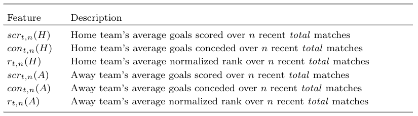

TLTR
- A handful of features, only 6. Drop the rest: total home/away goals scored/concede and home/away normalized rank.
- The central focus is on time series data conceived as a longitudinal (team) performance time series: it means that its value develops over time (multiple seasons merged).
- Look at the data and find the
optimal_nparameter via Pearson correlation: the bestoptimal_nvalue with highest correlation has been selected to compute all Super league rolling features (Super league is the league with multiple seasons merged). - Train KNN model, with \(3 <= k <= 350\), over 44 leagues. Deploy 44 models and predict the remaning matches of 2023 season for all 44 leagues (~ 700 matches).
- With an RMSE of
1.6339, the author achieved the top position: first.
My TLDR highlighted DeepFoot-KNN, a k-nearest neighbor model based on the total feature set (see below), as described by the author.

My findings
In my heroic attempt, I tried to replicare the paper and I did it.
What I’ve understood is, if you are short in time go to Pearson method. No computational expensive and simple. He used Pearson correlation to identify optimal_n value for the best recency rolling features.
I would like to investigate why the author has derived the optimal_n value considering goals conceded/scored and not including the ranking on the calculation. Althought ranking has not been included in the optimization process, the n value used to calculate the rolling ranking was, obviosly, the optimal_n which was based on different features. Is it right? Should I find a different optimal_n value for normalized ranking feat?
Anyhow, parameter n (optimal_n) has been used to compute the rolling features (home and away goals scores, home and away goals conceded, home and away normalized ranking).
Finally, trained the KNN model on top of (likelyhood) most predictive features, iterating K from 3 up to 350.
Pros
Prof Berrar’s paper impressed me. His iterative approach of providing definitions, explanations, and examples is a refreshing change in academic writing. This, combined with the use of a less math-heavy approach, made the concepts easy to grasp.
The 300,000-datapoint dataset is a fantastic resource, and I particularly appreciate the focus on just six features. Using only home_goals and away_goals to achieve an RMSE of 1.6339 on 44 leagues (approximately 700 data points) is remarkable.
The choice of an instance-based KNN model aligns perfectly with the simplicity of the data. Just like me, it’s a “lazy learner” that avoids overfitting with such a small number of inputs.
Cons
I put leave-one-out cross validation (LOOCV) under this section because it seems overfit although KNN balances this issue by increasing the optimal_k (nearest neghboors). So LOOCV overfit but KNN within an handful of features likely balances the problem.
Based on its (other) paper, Mr. Daniel compares different variants of cross validation, assessing that LOOCV and 10-fold cross-validation have the smallest bias.
A quick observation: in this paper (2019), Berrar randomly splited into a training set (90% of the data) and a hold-out test set (10% of the data) (Section 7.2.1) which is totally different from this approach. Is it due to the different features?
Single model for each league. Since the approach was to compute features league-by-league, the model must be developed league-by-league. It implies 44 models to deploy. 44 models to monitoring. 44 models to retrain.
Meta league > Super league.
WIP Notes
- Pearson correlation to determine optimal n value
- On seasons 2010-2023 the optimal n value is
43for PL - On seasons 2000/2023 the optimal n value is
59for PL vs60from the author.- this divergence may be due some missing datapoint i got from Buchdhal data.
- additionally i’ve icluded the partial 2023 season. the author haven’t that data.
- i didn’t spend much time on data processing with Buchdhal datasets (PL).
- using the same dataset of the author, has been decreased the pearson value correlation:
- from
0.461, n =43and about4000rows (2010/2023) - to
0.449, n=59 and about7000rows (2000/2023)
- from
- On seasons 2010-2023 the optimal n value is
- rmse on training/validation since loocv doens’t have a validation at all, is lower on the dataset 2000/2023.
- k=20, rmse =
1.295(dataset 2000/2023) vs k=20, rmse =1.334(dataset 2010/2023)
- k=20, rmse =
- once found same rmse on a k range, select the smallest:
- minimize complexity
- unnecessary smoothing
- model remains sensitive to local variations
- optimal_k (knn on score) on same dataset of the author is different on PL:
- my optimal_k =
244 - author optimal_k =
211
- my optimal_k =
- i’ve removed from the knn training the 2022 and 2023 seasons. will be used for the test set
- rmse on test set 2022 and 2023 with knn trained on 2010/2021 is
1.79. - rmse on test set 2022 and 2023 with knn trained on 2000/2021 is
1.82. - the pearson correlation on bundesliga is really low. doesn’t reach 0.4. additionally, rmse on test set (2022) is high:
1.88vs1.73in PL. - optimal_n on GER1 is
71vs author optimal_n =64(2000/2021) - optimal_n on FRA1 is
86with0.3583as pearson correlation (2000/2021) - optimal_n on ITA1 is
47with0.4188as pearson correlation (2000/2021) - optimal_n on SPA1 is
99with0.4554as pearson correlation (2000/2021) - optimal_n meta league is
91with0.3689as pearson correlation (2000/2021) - optimal_k on GER1 k=
230. not found the author optimal_k (2000/2021) - optimal_k
268on GER2, train_RMSE: 1.317 (2000/2021) - GER2 although has an higher RMSE on training, returned the smallest RMSE on test with
1.663.- it implies a lower variance on the target since GER1 returned an test_RMSE =
1.88
- it implies a lower variance on the target since GER1 returned an test_RMSE =
- optimal_n GER2
27with0.2318as pearson correlation (2000/2021) - optimal_k
141on FRA1, train_RMSE:1.203(2000/2021) - optimal_k
118on SPA1, train_RMSE:1.253(2000/2021) - test_rmse:
1.68on FRA1 (2022). - test_rmse:
1.51on ITA1 (2022). - test_rmse:
1.45on SPA1 (2022). - test_rmse:
1.88on GER1 (2022). - test_rmse:
1.73on ENG1 (2022). - avg_test_rmse:
1.65on all 5 top leagues. author achieved1.6339on all 44 leagues (super league) - increasing the features (corners, etc…) don’t improve the metric.
- with additional features (total 17 [7 std + 10 new]), in GER1 (2000/2021) RMSE on test (2022) is
1.9154vs1.88w/ standard features - with all individual features used to calculate pearson correlation, in GER1 (2000/2021) RMSE on test (2022) is
1.9202vs1.88w/ standard features - maybe additional features are not developed correctly
- maybe using all additional features as individual differences on the pearson correlation is not a good choice
- with additional features (total 17 [7 std + 10 new]), in GER1 (2000/2021) RMSE on test (2022) is
- after an initial analysis, meta league model > super leauge model
- meta league RMSE on test (2022): 1.6190
- super league RMSE on test (2022): 1.65
- optimization question
- finding optimal_n on the best subset features
- it means combining a subset or more then a subset of individual differences and total differences
- example:
- difference_total_goals_scored + difference_goals_scored => highest correlation
- other more combo => highest correlation
- example:
- it means combining a subset or more then a subset of individual differences and total differences
- finding optimal_n on the best subset features
- optimal_k in meta league is
211- RMSE_test improved
1.6144
- RMSE_test improved